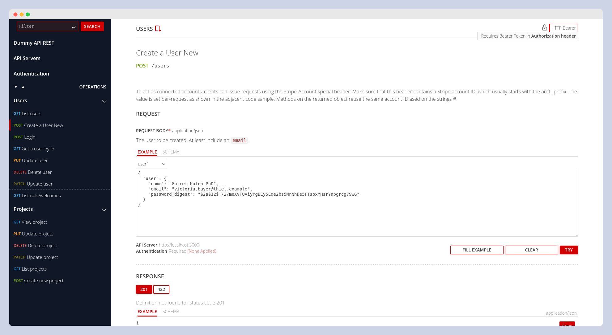
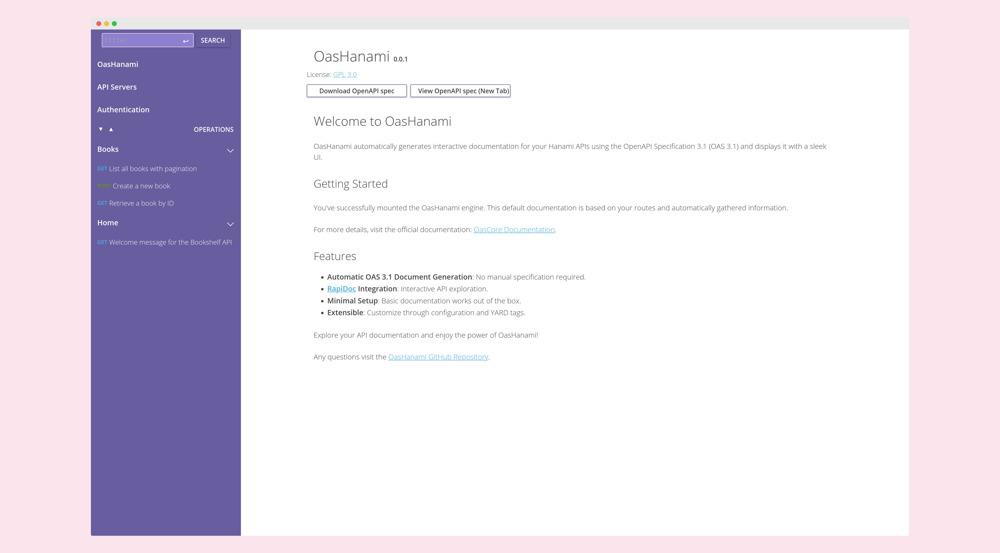

Introduction
OasCore is a Ruby gem designed to generate Open API Specification (OAS) 3.1 documentation directly from YARD comments in your endpoints. It serves as the core engine for OAS generation, while framework-specific adapters like OasRails (for Ruby on Rails) handle the extraction, integration and additional features.
Key Features
-
🚀 OAS 3.1 Generation: OasCore generates OAS version 3.1, the latest standard, ensuring your API documentation is up-to-date.
-
📝 YARD-Powered Documentation: Simply annotate your endpoints with YARD tags to include descriptions, parameters, and examples—no need to learn a new DSL or rely on framework-specific tools.
-
🔌 Framework Agnostic: OasCore is designed to work with any Ruby framework. Adapters like
OasRailsextend its functionality for specific frameworks.
Demo App (OasRails)
🔗 Open Demo App
👤 Username: oasrails
🔑 Password: oasrails
OasRails

Installation
-
Add this line to your Rails application's Gemfile:
gem "oas_rails"` -
Execute:
bundle -
Mount the engine in your config/routes.rb file
mount OasRails::Engine => '/docs'
You'll now have basic documentation based on your routes and automatically gathered information at localhost:3000/docs. To enhance it, create an initializer file and add Yard tags to your controller methods.
Configuring OasRails
To configure OasRails, you MUST create an initializer file including all your settings. The first step is to create your initializer file, which you can easily do with:
rails generate oas_rails:config
Then fill it with your data. Below are the available configuration options:
Basic Information about the API
-
config.info.title: The title of your API documentation. -
config.info.summary: A brief summary of your API. -
config.info.description: A detailed description of your API. This can include markdown formatting and will be displayed prominently in your documentation. -
config.info.contact.name: The name of the contact person or organization. -
config.info.contact.email: The contact email address. -
config.info.contact.url: The URL for more information or support.
Servers Information
config.servers: An array of server objects, each containingurlanddescriptionkeys. For more details, refer to the OpenAPI Specification.
Tag Information
config.tags: An array of tag objects, each containingnameanddescriptionkeys. For more details, refer to the OpenAPI Specification.
Optional Settings
-
config.include_mode: Determines the mode for including operations. The default value isall, which means it will include all route operations under theapi_path, whether documented or not. Other possible values:-
:with_tags: Includes in your OAS only the operations with at least one tag. Example:Not included:
def update endIncluded:
# @summary Return all Books def index end -
:explicit: Includes in your OAS only the operations tagged with@oas_include. Example:Not included:
def update endIncluded:
# @oas_include def index end
-
-
config.api_path: Sets the API path if your API is under a different namespace than the root. This is important to configure if you have theinclude_modeset toallbecause it will include all routes of your app in the final OAS. For example, if your app has additional routes and your API is under the namespace/api, set this configuration as follows:config.api_path = "/api" -
config.rapidoc_configuration: expects to be set as a string key => value hash. It is merged with defaults which can be found in the OAsRailsHelper. Any duplicate keys will override these. Refer to Rapidocs for any others. Defaults to{}config.rapidoc_configuration = {"show-header" => "true"} -
config.rapidoc_logo_url: expects a string, it is used as a source for an img tag so any valid img tag source should work. Defaults tonilconfig.rapidoc_logo_url = "/assets/some_random_image.png" -
config.ignored_actions: Defines an array of controller or controller#action pairs. You do not need to prepend theapi_path. This is useful when you want to include all routes except a few specific actions or when an external engine (e.g., Devise) adds routes to your API. -
config.default_tags_from: Determines the source of default tags for operations. Can be set to:namespaceor:controller. The first option means that if your endpoint is in the route/users/:id, it will be tagged withUsers. If set tocontroller, the tag will beUsersController. -
config.http_verbs: Defaults to[:get, :post, :put, :patch, :delete]
Authentication Settings
-
config.authenticate_all_routes_by_default: Determines whether to authenticate all routes by default. Default istrue. -
config.security_schema: The default security schema used for authentication. Choose from the following predefined options::api_key_cookie: API key passed via HTTP cookie.:api_key_header: API key passed via HTTP header.:api_key_query: API key passed via URL query parameter.:basic: HTTP Basic Authentication.:bearer: Bearer token (generic).:bearer_jwt: Bearer token formatted as a JWT (JSON Web Token).:mutual_tls: Mutual TLS authentication (mTLS).
-
config.security_schemas: Custom security schemas. Follow the OpenAPI Specification for defining these schemas.
Default Errors
-
config.set_default_responses: Determines whether to add default error responses to endpoints. Default istrue. -
config.possible_default_responses: An array of possible default error responses. Some responses are added conditionally based on the endpoint (e.g.,:not_foundonly applies toshow,update, ordeleteactions).
Default:[:not_found, :unauthorized, :forbidden, :internal_server_error, :unprocessable_entity]
Allowed Values: Symbols representing HTTP status codes from the list:
[:not_found, :unauthorized, :forbidden, :internal_server_error, :unprocessable_entity] -
config.response_body_of_default: The response body template for default error responses. Must be a string representing a hash, similar to those used in request body tags.
Default:"Hash{ message: String }" -
config.response_body_of_{code symbol}: Customizes the response body for specific error responses. Must be a string representing a hash, similar toresponse_body_of_default. If not specified, it defaults to the value ofresponse_body_of_default.Examples:
# Customize the response body for "unprocessable_entity" errors config.response_body_of_unprocessable_entity = "Hash{ errors: Array<String> }" # Customize the response body for "forbidden" errors config.response_body_of_forbidden = "Hash{ code: Integer, message: String }"
Project License
-
config.info.license.name: The title name of your project's license. Default: GPL 3.0 -
config.info.license.url: The URL to the full license text. Default: https://www.gnu.org/licenses/gpl-3.0.html#license-text
Enabling CORS for Interactive Documentation
By default, OasRails uses RapiDoc as the frontend for interactive API documentation. However, you can customize this to use other tools like Swagger UI or ReDoc if needed.
To test endpoints interactively using RapiDoc (or your chosen frontend), you must enable Cross-Origin Resource Sharing (CORS) in your Rails application. Follow these steps:
-
Add the
rack-corsgem to yourGemfile(Or uncomment):gem 'rack-cors' -
Run
bundle installto install the gem. -
Configure CORS in
config/initializers/cors.rb(create the file if it doesn't exist):Rails.application.config.middleware.insert_before 0, Rack::Cors do allow do origins '*' # For development, allow all origins. Restrict this in production. resource '*', headers: :any, methods: [:get, :post, :put, :patch, :delete, :options, :head], credentials: false # Set to `true` if using cookies or authentication headers. end end -
Restart your Rails server for the changes to take effect.
This will allow RapiDoc to make requests to your API endpoints from the browser.
Securing the OasRails Engine
To secure the OasRails engine, which exposes an endpoint for showing the OAS definition, you can configure authentication to ensure that only authorized users have access. Here are a few methods to achieve this:
1. Using Basic Authentication
Use basic authentication to protect the OasRails endpoint. You can set this up in an initializer:
# config/initializers/oas_core.rb
OasRails::Engine.middleware.use(Rack::Auth::Basic) do |username, password|
ActiveSupport::SecurityUtils.secure_compare(Rails.application.credentials.oas_core_username, username) &
ActiveSupport::SecurityUtils.secure_compare(Rails.application.credentials.oas_core_password, password)
end
2. Using Devise's authenticate Helper
You can use Devise's authenticate helper to restrict access to the OasRails endpoint. For example, you can allow only admin users to access the endpoint:
# config/routes.rb
# ...
authenticate :user, ->(user) { user.admin? } do
mount OasRails::Engine, at: '/docs'
end
3. Custom Authentication
To support custom authentication, you can extend the OasRails' ApplicationController using a hook. This allows you to add custom before actions to check for specific user permissions:
# config/initializers/oas_core.rb
ActiveSupport.on_load(:oas_core_application_controller) do
# context here is OasRails::ApplicationController
before_action do
raise ActionController::RoutingError.new('Not Found') unless current_user&.admin?
end
def current_user
# Load the current user
User.find(session[:user_id]) # Adjust according to your authentication logic
end
end
Customizing the View
The OasRails engine provides an easy way to display your OpenAPI Specification (OAS) within your Rails application. By default, it includes an index view in the OasCoreController that displays RapiDoc through a CDN with default configurations. You can easily override this view to replace RapiDoc entirely or configure it differently.
Available configurations
Changing the UI Theme
You can customize the appearance of the OAS documentation UI by setting the config.rapidoc_theme option in the initializer file. The default theme is "rails", but you can choose from the following predefined themes:
- dark: Dark background with light text.
- light: Light background with dark text.
- night: Dark theme with a blueish tint.
- mud: Dark theme with brownish tones.
- coffee: Dark theme with warm brown tones.
- forest: Dark theme with greenish tones.
- olive: Dark theme with olive tones.
- outerspace: Dark theme with a space-like feel.
- ebony: Dark theme with deep blue tones.
- snow: Light theme with a clean white background.
- green: Light theme with green accents.
- blue: Light theme with blue accents.
- beige: Light theme with a beige background.
- graynav: Light theme with a gray navigation bar.
- purplenav: Light theme with a purple navigation bar.
- lightgraynav: Light theme with a light gray navigation bar.
- darkbluenav: Light theme with a dark blue navigation bar.
- rails: Default theme with Rails-inspired colors (red accents).
How to Configure the Theme
To change the theme, add the following line to your config/initializers/oas_rails.rb file:
OasRails.configure do |config|
config.rapidoc_theme = "dark" # Replace "dark" with your preferred theme name
end
Any other modification will require that you overwrite the index view explained in the next steps.
Overriding the index View
To override the index view provided by the OasRails engine, follow these steps:
-
Create the Override View File: In your host application, create a new file at the path
app/views/oas_rails/oas_rails/index.html.erb. If the directories do not exist, you will need to create them. -
Customize the View: Open the newly created
index.html.erbfile and add your custom HTML and ERB code to display the OAS as desired. You can refer to the source code of this project for guidance.
Overriding/Adding rapid-doc inline styles
To override styles in rapidoc we can use parts.
If you do not override the default index then there is a partial available for override app/views/oas_rails/oas_rails/_rapidoc_style_parts.html.erb.
Please see its default for a starting point.
Using the Custom View
Once the custom view file is in place, Rails will automatically use it instead of the view provided by the OasRails engine. This allows you to fully customize the presentation of the OAS without modifying the engine's code.
Configuring the Source OAS
For more complex scenarios, it is highly recommended to use a source OAS (OpenAPI Specification) file. This file serves as a centralized repository for reusable objects (such as schemas, request bodies, parameters, and responses) that can be referenced across your API documentation. This approach promotes consistency and reduces redundancy.
Basic Configuration
To set up a source OAS file, configure the path in your OasRails configuration block:
OasRails.configure do |config|
config.source_oas_path = "lib/assets/oas.json" # Path to your source OAS file
end
Example Source OAS File
Below is an example of an oas.json file containing reusable components, such as a User schema:
{
"components": {
"schemas": {
"User": {
"type": "object",
"properties": {
"name": {
"type": "string",
"description": "The user's full name"
},
"email": {
"type": "string",
"format": "email",
"description": "The user's email address"
},
"age": {
"type": "integer",
"description": "The user's age",
"minimum": 0
},
"password": {
"type": "string",
"description": "The user's password",
"minLength": 6
}
},
"required": [
"name",
"email",
"password"
],
"example": {
"name": "John Doe",
"email": "john.doe@example.com",
"age": 30,
"password": "securepassword123"
}
}
},
"requestBodies": { ... },
"parameters": { ... },
...
}
}
Referencing Reusable Components
Once your source OAS file is configured, you can reference its components in your API documentation tags. For example, to reference the User schema in a response:
# @response Created User (200) [Reference:#/components/schemas/User]
Key Benefits
- Consistency: Ensures uniformity across your API documentation.
- Reusability: Eliminates duplication by centralizing common objects.
- Maintainability: Simplifies updates, as changes to the source OAS propagate automatically to all references.
Supported References
You can reference the schemas of request bodies, responses, and parameters using the main tag. For example:
# @request_body Required User [Reference:#/components/schemas/User]
Alternatively, you can reference the entire request body, response, or parameter using the reference tags:
# @request_body_ref #/components/requestBodies/createUser
OasHanami
Please note that this implementation is not yet thoroughly tested and is in an early stage. If you encounter any issues or have suggestions, feel free to open a GitHub issue, PR, or discussion here.

Installation
-
Add this line to your Hanami application's Gemfile:
gem "oas_namai"` -
Execute:
bundle -
Mount the engine in your config/routes.rb file at the bottom of all routes to ensure it doesn't interfere with your application's routing:
mount OasHanami::Web::View, at: "/docs" -
The most important step: add the route inspector before starting the app. It can be do in your
config.rufile:require "hanami/boot" Hanami.app.router(inspector: OasHanami::Inspector.new) # set before run the app. run Hanami.app
You'll now have basic documentation based on your routes and automatically gathered information at localhost:2300/docs. To enhance it, create an initializer file and add Yard tags to your controller methods.
Configuring OasHanami
To configure OasHanami, according to the official documentation, you need to create a provider file that includes all your settings. The first step is to create your initializer file as follows:
# config/providers/oas_hanami.rb
Hanami.app.register_provider(:oas_hanami) do
prepare do
require "oas_hanami"
end
start do
OasHanami.configure do |config|
config.info.title = "Amazing Hanami API"
end
end
end
Then fill it with your data. Below are the available configuration options:
Basic Information about the API
-
config.info.title: The title of your API documentation. -
config.info.summary: A brief summary of your API. -
config.info.description: A detailed description of your API. This can include markdown formatting and will be displayed prominently in your documentation. -
config.info.contact.name: The name of the contact person or organization. -
config.info.contact.email: The contact email address. -
config.info.contact.url: The URL for more information or support.
Servers Information
config.servers: An array of server objects, each containingurlanddescriptionkeys. For more details, refer to the OpenAPI Specification.
Tag Information
config.tags: An array of tag objects, each containingnameanddescriptionkeys. For more details, refer to the OpenAPI Specification.
Optional Settings
-
config.include_mode: Determines the mode for including operations. The default value isall, which means it will include all route operations under theapi_path, whether documented or not. Other possible values:-
:with_tags: Includes in your OAS only the operations with at least one tag. Example:Not included:
def update endIncluded:
# @summary Return all Books def index end -
:explicit: Includes in your OAS only the operations tagged with@oas_include. Example:Not included:
def update endIncluded:
# @oas_include def index end
-
-
config.api_path: Sets the API path if your API is under a different namespace than the root. This is important to configure if you have theinclude_modeset toallbecause it will include all routes of your app in the final OAS. For example, if your app has additional routes and your API is under the namespace/api, set this configuration as follows:config.api_path = "/api" -
config.http_verbs: Defaults to[:get, :post, :put, :patch, :delete]
Authentication Settings
-
config.authenticate_all_routes_by_default: Determines whether to authenticate all routes by default. Default istrue. -
config.security_schema: The default security schema used for authentication. Choose from the following predefined options::api_key_cookie: API key passed via HTTP cookie.:api_key_header: API key passed via HTTP header.:api_key_query: API key passed via URL query parameter.:basic: HTTP Basic Authentication.:bearer: Bearer token (generic).:bearer_jwt: Bearer token formatted as a JWT (JSON Web Token).:mutual_tls: Mutual TLS authentication (mTLS).
-
config.security_schemas: Custom security schemas. Follow the OpenAPI Specification for defining these schemas.
Project License
-
config.info.license.name: The title name of your project's license. Default: GPL 3.0 -
config.info.license.url: The URL to the full license text. Default: https://www.gnu.org/licenses/gpl-3.0.html#license-text
Configuring the Source OAS
For more complex scenarios, it is highly recommended to use a source OAS (OpenAPI Specification) file. This file serves as a centralized repository for reusable objects (such as schemas, request bodies, parameters, and responses) that can be referenced across your API documentation. This approach promotes consistency and reduces redundancy.
Basic Configuration
To set up a source OAS file, configure the path in your OasHanami configuration block:
OasHanami.configure do |config|
config.source_oas_path = "lib/oas.json" # Path to your source OAS file
end
Example Source OAS File
Below is an example of an oas.json file containing reusable components, such as a User schema:
{
"components": {
"schemas": {
"User": {
"type": "object",
"properties": {
"name": {
"type": "string",
"description": "The user's full name"
},
"email": {
"type": "string",
"format": "email",
"description": "The user's email address"
},
"age": {
"type": "integer",
"description": "The user's age",
"minimum": 0
},
"password": {
"type": "string",
"description": "The user's password",
"minLength": 6
}
},
"required": [
"name",
"email",
"password"
],
"example": {
"name": "John Doe",
"email": "john.doe@example.com",
"age": 30,
"password": "securepassword123"
}
}
},
"requestBodies": { ... },
"parameters": { ... },
...
}
}
Referencing Reusable Components
Once your source OAS file is configured, you can reference its components in your API documentation tags. For example, to reference the User schema in a response:
# @response Created User (200) [Reference:#/components/schemas/User]
Key Benefits
- Consistency: Ensures uniformity across your API documentation.
- Reusability: Eliminates duplication by centralizing common objects.
- Maintainability: Simplifies updates, as changes to the source OAS propagate automatically to all references.
Supported References
You can reference the schemas of request bodies, responses, and parameters using the main tag. For example:
# @request_body Required User [Reference:#/components/schemas/User]
Alternatively, you can reference the entire request body, response, or parameter using the reference tags:
# @request_body_ref #/components/requestBodies/createUser
OasGrape
Please note that this implementation is not yet thoroughly tested and is in an early stage. If you encounter any issues or have suggestions, feel free to open a GitHub issue, pull request (PR), or discussion here.
The usage can be a bit tricky. Unlike other frameworks, this cannot be implemented as a simple method comment because Grape does not use methods—only lambdas that are called and loaded once. As a result, live reloading of documentation does not work here.
Usage
As mentioned earlier, the implementation in Grape differs from other frameworks. The tag comments must be placed inside the detail key of a desc block. Everything inside this key is parsed as a comment, and this is where the OAS YARD tags should be included.
Example code:
desc "Returns a list of Users." do
detail <<~OAS_GRAPE
# @summary Returns a list of Users.
# @parameter offset(query) [Integer] Used for pagination of response data. default: (0) minimum: (0)
# @parameter limit(query) [Integer] Maximum number of items per page. default: (25) minimum: (1) maximum: (100)
# @parameter status(query) [Array<String>] Filter by status. enum: (active,inactive,deleted)
# @parameter X-front(header) [String] Header for identifying the front. minLength: (1) maxLength: (50)
# @response Success response(200) [Array<Hash{ id: Integer}>]
# @response_example Success(200)
# [ JSON
# [
# { "id": 1, "name": "John", "email": "john@example.com" },
# { "id": 2, "name": "Jane", "email": "jane@example.com" }
# ]
# ]
# @tags Users, Public
OAS_GRAPE
end
get do
{ users: @@users }
end
Installation
This guide will walk you through the steps to install and integrate the oas_grape gem into your Grape API project.
Prerequisites
- A Ruby on Rails or Grape API project.
- Basic familiarity with Grape and OpenAPI Specification (OAS).
Steps
1. Add the Gem to Your Project
Include the oas_grape gem in your Gemfile:
gem 'oas_grape'
Run bundle install to install the gem.
2. Integrate with Your Grape API
In your main API file (e.g., api.rb), require the gem and mount the OAS documentation viewer:
require "oas_grape"
module Dummy
class API < Grape::API
format :json
# Mount your API endpoints
mount Dummy::UsersAPI
mount Dummy::NotesAPI
# ... add other endpoints as needed
# Mount the OAS documentation viewer
mount OasGrape::Web::View, at: "/docs"
end
end
3. Access the Documentation
After starting your server, navigate to /docs in your browser to view the interactive API documentation.
Configuration
To customize oas_grape for your API documentation needs, follow these steps:
-
Create a Configuration File:
We recommend creating a dedicated file (e.g.,oas_grape_configuration.rb) to centralize all your settings. This ensures maintainability and clarity. -
Load the Configuration:
Require this file in your main application file (e.g.,api.rborapplication.rb) to apply the configurations globally. -
Available Settings:
Below is a comprehensive list of configurations you can customize for your API documentation:
Basic Information about the API
-
config.info.title: The title of your API documentation. -
config.info.summary: A brief summary of your API. -
config.info.description: A detailed description of your API. This can include markdown formatting and will be displayed prominently in your documentation. -
config.info.contact.name: The name of the contact person or organization. -
config.info.contact.email: The contact email address. -
config.info.contact.url: The URL for more information or support.
Servers Information
config.servers: An array of server objects, each containingurlanddescriptionkeys. For more details, refer to the OpenAPI Specification.
Tag Information
config.tags: An array of tag objects, each containingnameanddescriptionkeys. For more details, refer to the OpenAPI Specification.
Optional Settings
-
config.include_mode: Determines the mode for including operations. The default value isall, which means it will include all route operations under theapi_path, whether documented or not. Other possible values:-
:with_tags: Includes in your OAS only the operations with at least one tag. Example:Not included:
def update endIncluded:
# @summary Return all Books def index end -
:explicit: Includes in your OAS only the operations tagged with@oas_include. Example:Not included:
def update endIncluded:
# @oas_include def index end
-
-
config.api_path: Sets the API path if your API is under a different namespace than the root. This is important to configure if you have theinclude_modeset toallbecause it will include all routes of your app in the final OAS. For example, if your app has additional routes and your API is under the namespace/api, set this configuration as follows:config.api_path = "/api" -
config.http_verbs: Defaults to[:get, :post, :put, :patch, :delete]
Authentication Settings
-
config.authenticate_all_routes_by_default: Determines whether to authenticate all routes by default. Default istrue. -
config.security_schema: The default security schema used for authentication. Choose from the following predefined options::api_key_cookie: API key passed via HTTP cookie.:api_key_header: API key passed via HTTP header.:api_key_query: API key passed via URL query parameter.:basic: HTTP Basic Authentication.:bearer: Bearer token (generic).:bearer_jwt: Bearer token formatted as a JWT (JSON Web Token).:mutual_tls: Mutual TLS authentication (mTLS).
-
config.security_schemas: Custom security schemas. Follow the OpenAPI Specification for defining these schemas.
Project License
-
config.info.license.name: The title name of your project's license. Default: GPL 3.0 -
config.info.license.url: The URL to the full license text. Default: https://www.gnu.org/licenses/gpl-3.0.html#license-text
Tags
In addition to the information provided in the initializer file and the data that can be extracted from the routes and methods automatically, it is essential to document your API in the following way. The documentation is created with the help of YARD, so the methods are documented with comment tags.
Documenting Your Endpoints
Almost every tag description in an OAS file supports markdown formatting (e.g., bold, italics, lists, links) for better readability in the generated documentation. Additionally, multi-line descriptions are supported. When using multi-line descriptions, ensure the content is indented at least one space more than the tag itself to maintain proper formatting.
For example:
# @request_body_example Simple User [Hash]
# {
# user: {
# name: "Oas",
# email: "oas@test.com",
# password: "Test12345"
# }
# }
You can use these tags in your controller methods to enhance the automatically generated documentation. Remember to use markdown formatting in your descriptions for better readability in the generated OAS document.
Summary
Below is a summary of all available tags for documenting your API endpoints:
Authentication Tags
@auth: Specifies security mechanisms for the endpoint (e.g.,# @auth [bearer, basic]).@no_auth: Removes security requirements for the endpoint (e.g.,# @no_auth).
Inclusion Tags
@oas_include: Explicitly includes the endpoint in the OAS file wheninclude_modeis:explicit(e.g.,# @oas_include).
Parameter Tags
@parameter: Documents a parameter for the endpoint (e.g.,# @parameter page(query) [Integer] The page number.).@parameter_ref: References a predefined parameter (e.g.,# @parameter_ref #/components/parameters/user_id).
Request Body Tags
@request_body: Describes the request body (e.g.,# @request_body The user to be created [!User]).@request_body_example: Provides examples for the request body (e.g.,# @request_body_example basic user [Hash] {user: {name: "Oas"}}).@request_body_ref: References a predefined request body (e.g.,# @request_body_ref #/components/requestBodies/user).
Response Tags
@response: Documents the endpoint's responses (e.g.,# @response User not found by the provided Id(404) [Hash]).@response_example: Provides examples for responses (e.g.,# @response_example Invalid Email(422) [{success: "false"}]).@response_ref: References a predefined response (e.g.,# @response_ref (200) #/components/responses/success).
Metadata Tags
@summary: Adds a custom summary for the endpoint (e.g.,# @summary This endpoint creates a User).@tags: Tags the endpoint for categorization (e.g.,# @tags Users, Admin).
For detailed usage and examples, refer to the individual tag documentation files.
@summary
Structure: @summary text
Used to add a summary to the endpoint. It replaces the default summary/title of the endpoint.
Example:
# @summary This endpoint creates a User
# @summary This endpoint
# creates a User
@parameter
Structure: @parameter name(position) [type] text [keyword: (value)]
Represents a parameter for the endpoint. The position can be one of the following: header, path, cookie, or query. The type should be a valid Ruby class, such as String, Integer, or Array<String>. Prefix the class with a ! to indicate a required parameter.
Supported Keywords in Descriptions
You can include additional schema keywords in the description using the format keyword: (value). The following keywords are supported:
default: The default value for the parameter.
Example:default: (1)minimum: The minimum value for numeric parameters.
Example:minimum: (0)maximum: The maximum value for numeric parameters.
Example:maximum: (100)enum: A comma-separated list of allowed values.
Example:enum: (red,green,blue)format: The format of the parameter (e.g.,date,uuid).
Example:format: (uuid)pattern: A regex pattern for string validation.
Example:pattern: (^[A-Za-z]+$)nullable: Whether the parameter can benull(trueorfalse).
Example:nullable: (true)exclusiveMinimum: Whether theminimumis exclusive (trueorfalse).
Example:exclusiveMinimum: (true)exclusiveMaximum: Whether themaximumis exclusive (trueorfalse).
Example:exclusiveMaximum: (false)minLength: The minimum length for string parameters.
Example:minLength: (3)maxLength: The maximum length for string parameters.
Example:maxLength: (50)
Examples:
# Basic usage
# @parameter page(query) [!Integer] The page number. default: (1) minimum: (0)
# Enum and nullable
# @parameter color(query) [String] The color of the item. enum: (red,green,blue) nullable: (true)
# String validation
# @parameter username(path) [String] The username. pattern: (^[A-Za-z0-9_]+$), minLength: (3), maxLength: (20)
From Swagger docs: Common Mistakes
There are two common mistakes when using the default keyword:
- Using default with required parameters or properties, for example, with path parameters. This does not make sense – if a value is required, the client must always send it, and the default value is never used.
- Using default to specify a sample value. This is not intended use of default and can lead to unexpected behavior in some Swagger tools. Use the example or examples keyword for this purpose instead. See Adding Examples.
@parameter_ref
Structure: @parameter_ref text
Document a parameter using a custom reference. This tag allows you to reference predefined parameters or external resources, making your API documentation more modular and reusable.
Usage
text: A reference to the parameter definition. This can be:- An internal reference (e.g.,
#/components/parameters/user_id). - An external URL (e.g.,
https://example.com/parameters/user_id.json).
- An internal reference (e.g.,
Examples
-
Internal Reference:
# @parameter_ref #/components/parameters/user_idThis references a predefined user ID parameter in your OpenAPI components.
-
External Resource:
# @parameter_ref https://example.com/parameters/user_id.jsonThis references an external resource for a user ID parameter, useful for shared documentation across services.
@request_body
Structure: @request_body text [type<structure>]
Documents the request body needed by the endpoint. The structure is optional if you provide a valid Active Record class. Use ! to indicate a required request body.
One line example:
# @request_body The user to be created [!User]
# @request_body The user to be created [User]
Multi-line example:
# @request_body User to be created
# [
# !Hash{
# user: Hash{
# name: String,
# email: String,
# age: Integer,
# cars: Array<
# Hash{
# identifier: String
# }
# >
# }
# }
# ]
Content type
By default, the content type defined for a request body is "application/json". You can change it by passing a custom content type between parentheses after the text. Example:
# @request_body User (multipart/form-data) [Hash{ user: String }]
Reference
This tag also supports a reference for its schema. The reference can be to anything you want, external or internal resources, following the definition of OAS https://spec.openapis.org/oas/v3.1.0.html#schema-object.
The reference should be passed like this:
# @request_body The user to be created [Reference:#/components/schema/userRequest]
Notice that the reference here is for the schema and not for the entire request body. If you need to reference the complete request body, consider using @request_body_ref.
@request_body_ref
Structure: @request_body_ref text
Document a request body using a custom reference. This tag allows you to reference predefined request bodies or external resources, making your API documentation more modular and reusable.
Usage
text: A reference to the request body definition. This can be:- An internal reference (e.g.,
#/components/requestBodies/user). - An external URL (e.g.,
https://example.com/request_bodies/user.json).
- An internal reference (e.g.,
Examples
-
Internal Reference:
# @request_body_ref #/components/requestBodies/userThis references a predefined user request body in your OpenAPI components.
-
External Resource:
# @request_body_ref https://example.com/request_bodies/user.jsonThis references an external resource for a user request body, useful for shared documentation across services.
@request_body_example
Structure: @request_body_example text [type]
Adds examples to the provided request body.
One line example:
# @request_body_example A complete User. [JSON{"user": {"name": 'Luis', "age": 30, "password": 'MyWeakPassword123'}}]
Multi-line example:
# @request_body_example basic user
# [JSON{
# "user": {
# "name": "Oas",
# "email": "oas@test.com",
# "password": "Test12345"
# }
# }
# ]
It should be valid JSON; don't forget that keys must be enclosed in quotes ("").
@response
Structure: @response text(code) [type<structure>]
Documents the responses of the endpoint and overrides the default responses found by the engine.
One line example:
# @response User not found by the provided Id(404) [Hash{success: Boolean, message: String}]
# @response Validation errors(422) [Hash{success: Boolean, errors: Array<Hash{field: String, type: String, detail: Array<String>}>}]
Multi-line example:
# @response A test response from an Issue(405)
# [
# Hash{
# message: String,
# data: Hash{
# availabilities: Array<String>,
# dates: Array<Date>
# }
# }
# ]
Reference
This tag also supports a reference for its schema. The reference can be to anything you want, external or internal resources, following the definition of OAS https://spec.openapis.org/oas/v3.1.0.html#schema-object.
The reference should be passed like this:
# @response User not found by the provided Id(404) [Reference:#/components/schema/errorResponse]
Notice that the reference here is for the schema and not for the entire response. If you need to reference the complete response, consider using @response_ref.
@response_ref
Structure: @response_ref (code) text
Document a response using a custom reference. This tag allows you to reference predefined responses or external resources, making your API documentation more modular and reusable.
Usage
code: The HTTP status code for the response (e.g.,200,404,500).text: A reference to the response definition. This can be:- An internal reference (e.g.,
#/components/responses/success). - An external URL (e.g.,
https://example.com/responses/not_found).
- An internal reference (e.g.,
Examples
-
Internal Reference:
# @response_ref (200) #/components/responses/successThis references a predefined success response in your OpenAPI components.
-
Error Response:
# @response_ref (500) #/components/responses/errorThis references a predefined error response in your OpenAPI components.
-
External Resource:
# @response_ref (404) https://example.com/responses/not_found.jsonThis references an external resource for a "Not Found" response, useful for shared documentation across services.
@response_example
Structure: @response_example text(code) [Type]
Documents response examples of the endpoint associated to a response code.
One line example:
# @response_example Invalida Email(422) [JSON{"success": "false", "errors": [{"field": "email", "type": "email", "detail": ["Invalid email"]}] }]
# @response_example Id not exists (404) [{"success": "false", "message": "Nothing found with the provided ID." }]
Multi-line example:
# @response_example Another 405 Error (405)
# [JSON{
# {
# "message": "another",
# "data": {
# "availabilities": [
# "three"
# ],
# "dates": []
# }
# }
# }]
It should be valid JSON; don't forget that keys must be enclosed in quotes ("").
@tags
Structure: @tags Tag1,Tag2,Tag3
Tags your endpoints. You can define these tags in the initializer file for documentation purposes, but it is not required to predefine them before use.
This tag accepts a string where tags are separated by commas (,). Each value becomes a tag for the documented endpoint.
Examples:
# @tags Users
# @tags Project, Admin
@no_auth
Structure: @no_auth
This tag will remove any security requirement from the endpoint. Useful when most of your endpoints require authentication and only a few do not.(Ex: Login, Registration...)
Example:
# @no_auth
@auth
Structure: @auth [types]
This tag will set which security mechanisms can be used for the endpoint. The security mechanisms MUST be defined previously in the initializer file.
Example:
# @auth [bearer, basic]
@oas_include
Use this tag to explicitly include endpoints in the final OpenAPI Specification (OAS) file when include_mode is set to :explicit. Only endpoints annotated with @oas_include will be included.
Usage
Add the @oas_include tag as a comment above the endpoint you want to document. For example:
Endpoint Not Included (Default Behavior)
def update
end
Endpoint Included (With @oas_include)
# @oas_include
def index
end
Examples
class UsersController < ApplicationController
before_action :set_user, only: %i[show update destroy]
# @summary Returns a list of Users.
#
# @parameter offset(query) [Integer] Used for pagination of response data (default: 25 items per response). Specifies the offset of the next block of data to receive.
# @parameter status(query) [Array<String>] Filter by status. (e.g. status[]=inactive&status[]=deleted).
# @parameter X-front(header) [String] Header for identify the front.
def index
@users = User.all
end
# @summary Get a user by id.
# @auth [bearer]
#
# This method show a User by ID. The id must exist of other way it will be returning a **`404`**.
#
# @parameter id(path) [Integer] Used for identify the user.
# @response Requested User(200) [Hash] {user: {name: String, email: String, created_at: DateTime }}
# @response User not found by the provided Id(404) [Hash] {success: Boolean, message: String}
# @response You don't have the right permission for access to this resource(403) [Hash] {success: Boolean, message: String}
def show
render json: @user
end
# @summary Create a User
# @no_auth
#
# @request_body The user to be created. At least include an `email`. [!User]
# @request_body_example basic user [Hash] {user: {name: "Luis", email: "luis@gmail.ocom"}}
def create
@user = User.new(user_params)
if @user.save
render json: @user, status: :created
else
render json: { success: false, errors: @user.errors }, status: :unprocessable_entity
end
end
# A `user` can be updated with this method
# - There is no option
# - It must work
# @tags users, update
# @request_body User to be created [!Hash{user: { name: String, email: !String, age: Integer, available_dates: Array<Date>}}]
# @request_body_example Update user [Hash] {user: {name: "Luis", email: "luis@gmail.com"}}
# @request_body_example Complete User [Hash] {user: {name: "Luis", email: "luis@gmail.com", age: 21}}
def update
if @user.update(user_params)
render json: @user
else
render json: @user.errors, status: :unprocessable_entity
end
end
# @summary Delete a User
# Delete a user and his associated data.
def destroy
@user.destroy!
redirect_to users_url, notice: 'User was successfully destroyed.', status: :see_other
end
private
# Use callbacks to share common setup or constraints between actions.
def set_user
@user = User.find(params[:id])
end
# Only allow a list of trusted parameters through.
def user_params
params.require(:user).permit(:name, :email)
end
end
LLMs Documentation (llms.txt)
OasCore generates .txt files optimized for AI integration:
- llms.txt: Provides the basics to understand the structure and functionality of OasCore. (Work in progress)
- llms-full.txt: Offers a full description of how to use OasCore and document endpoints. (Currently recommended)
How It Works (in 3 Steps)
1. Choose the File
OasCore generates .txt files optimized for AI tools.
2. Load It Into Your Tool
You can load these files into any AI tool or editor that supports external context. For this example, I used Cursor. This is not a tool I recommend because it is closed-source, but it worked for the example.
3. Ask Questions Naturally
Examples of questions you can ask:
- "How to document JWT authentication in OasCore?"
- "Document the endpoint..."
- "Add examples of possible request bodies for the create method."